Check RNA-seq PCs
Ben Fair
3/20/2019
Last updated: 2019-04-03
Checks: 5 1
Knit directory: Comparative_eQTL/analysis/
This reproducible R Markdown analysis was created with workflowr (version 1.2.0). The Report tab describes the reproducibility checks that were applied when the results were created. The Past versions tab lists the development history.
The R Markdown file has unstaged changes. To know which version of the R Markdown file created these results, you’ll want to first commit it to the Git repo. If you’re still working on the analysis, you can ignore this warning. When you’re finished, you can run wflow_publish to commit the R Markdown file and build the HTML.
Great job! The global environment was empty. Objects defined in the global environment can affect the analysis in your R Markdown file in unknown ways. For reproduciblity it’s best to always run the code in an empty environment.
The command set.seed(20190319) was run prior to running the code in the R Markdown file. Setting a seed ensures that any results that rely on randomness, e.g. subsampling or permutations, are reproducible.
Great job! Recording the operating system, R version, and package versions is critical for reproducibility.
Nice! There were no cached chunks for this analysis, so you can be confident that you successfully produced the results during this run.
Great! You are using Git for version control. Tracking code development and connecting the code version to the results is critical for reproducibility. The version displayed above was the version of the Git repository at the time these results were generated.
Note that you need to be careful to ensure that all relevant files for the analysis have been committed to Git prior to generating the results (you can use wflow_publish or wflow_git_commit). workflowr only checks the R Markdown file, but you know if there are other scripts or data files that it depends on. Below is the status of the Git repository when the results were generated:
Ignored files:
Ignored: .DS_Store
Ignored: .Rhistory
Ignored: .Rproj.user/
Untracked files:
Untracked: analysis/20190321_Check-Kinship-And-PopulationStructure.Rmd
Untracked: analysis/20190325_MergingRNASeqLanes.Rmd
Untracked: analysis/20190326_Admixture.Rmd
Untracked: analysis/20190326_PCA.Rmd
Untracked: analysis/20190327_MakeFamAndCovariateFiles.Rmd
Untracked: analysis/20190327_MakeFamPhenotypeFile.Rmd
Untracked: docs/figure/20190321_Check-Kinship-And-PopulationStructure.Rmd/
Untracked: docs/figure/20190325_MergingRNASeqLanes.Rmd/
Untracked: docs/figure/20190326_PCA.Rmd/
Unstaged changes:
Deleted: ._workflowr.yml.swp
Modified: analysis/20190320_Check-RNAseq-PCs.Rmd
Modified: analysis/index.Rmd
Note that any generated files, e.g. HTML, png, CSS, etc., are not included in this status report because it is ok for generated content to have uncommitted changes.
These are the previous versions of the R Markdown and HTML files. If you’ve configured a remote Git repository (see ?wflow_git_remote), click on the hyperlinks in the table below to view them.
| File | Version | Author | Date | Message |
|---|---|---|---|---|
| Rmd | 8dd795f | Benjmain Fair | 2019-03-20 | First analysis on workflowr |
| html | 8dd795f | Benjmain Fair | 2019-03-20 | First analysis on workflowr |
library(corrplot)
library(ggfortify)
library(readxl)
library(tidyverse)
library(psych)
library(ggrepel)
library(knitr)
library(reshape2)
library(gplots)RNA-seq data for each individual was pseudo-mapped/quantified by kallisto and merged into a matrix of TPM values.
# Read in count table, filtering out rows that are all zeros
CountTable <- read.table(gzfile('../output/CountTable.tpm.txt.gz'), header=T, check.names=FALSE, row.names = 1) %>%
rownames_to_column('gene') %>% #hack to keep rownames despite dplyr filter step
filter_if(is.numeric, any_vars(. > 0)) %>%
column_to_rownames('gene')
kable(head(CountTable))| 4X0095 | 4X0212 | 4X0267 | 4X0333 | 4X0339 | 4X0354 | 4X0357 | 4X0550 | 4x0025 | 4x0043 | 4x373 | 4x0430 | 4x0519 | 4x523 | 88A020 | 95A014 | 295 | 317 | 338 | 389 | 438 | 456 | 462 | 476 | 495 | 503 | 522 | 529 | 537 | 549 | 554 | 554_2 | 558 | 570 | 623 | 676 | 724 | Little_R | MD_And | |
|---|---|---|---|---|---|---|---|---|---|---|---|---|---|---|---|---|---|---|---|---|---|---|---|---|---|---|---|---|---|---|---|---|---|---|---|---|---|---|---|
| ENSPTRT00000098376.1 | 0.0377317 | 0.272220 | 0.283268 | 0.0768681 | 0.0241551 | 0.489356 | 0.149515 | 0.0338373 | 0.159397 | 0.2715600 | 0.0718747 | 0.508540 | 0.487206 | 0.4750030 | 0.0341022 | 0.138268 | 0.2475900 | 0.0435386 | 0.299943 | 0.0288987 | 0.0332317 | 0.0316096 | 0.0338501 | 0.153948 | 0 | 0.1674910 | 0.2284390 | 0.245499 | 0.258301 | 0.1090800 | 0.0415181 | 0.1853400 | 0.034166 | 0.10919 | 0.0405918 | 0.0690902 | 0.0339912 | 0.0376673 | 0 |
| ENSPTRT00000091526.1 | 0.0000000 | 0.000000 | 0.000000 | 0.0000000 | 0.0279624 | 0.000000 | 0.000000 | 0.0000000 | 0.000000 | 0.0000000 | 0.1664070 | 0.000000 | 0.000000 | 0.3142130 | 0.0000000 | 0.000000 | 0.0000000 | 0.0000000 | 0.000000 | 0.0000000 | 0.0000000 | 0.0000000 | 0.0000000 | 0.000000 | 0 | 0.0553974 | 0.0000000 | 0.243596 | 0.108732 | 0.1894100 | 0.0000000 | 0.0000000 | 0.000000 | 0.00000 | 0.0000000 | 0.0000000 | 0.0000000 | 0.0000000 | 0 |
| ENSPTRT00000091354.1 | 0.0000000 | 0.000000 | 0.000000 | 0.0000000 | 0.0000000 | 0.000000 | 0.000000 | 0.0000000 | 0.000000 | 0.0000000 | 0.0000000 | 0.000000 | 0.000000 | 0.0741825 | 0.0000000 | 0.000000 | 0.0000000 | 0.0000000 | 0.000000 | 0.0000000 | 0.0000000 | 0.0000000 | 0.2960420 | 0.149597 | 0 | 0.0000000 | 0.0713518 | 0.000000 | 0.000000 | 0.0596237 | 0.0907759 | 0.0000000 | 0.000000 | 0.00000 | 0.0000000 | 0.0755299 | 0.0000000 | 0.0000000 | 0 |
| ENSPTRT00000080032.1 | 0.0000000 | 0.000000 | 0.000000 | 0.0000000 | 0.0000000 | 0.000000 | 0.000000 | 0.0000000 | 0.000000 | 0.1268190 | 0.0000000 | 0.000000 | 0.000000 | 0.4753460 | 0.0000000 | 0.000000 | 0.0495538 | 0.0000000 | 0.000000 | 0.0000000 | 0.0000000 | 0.0000000 | 0.0000000 | 0.000000 | 0 | 0.0000000 | 0.0000000 | 0.196541 | 0.000000 | 0.0764113 | 0.0000000 | 0.2077310 | 0.000000 | 0.00000 | 0.0000000 | 0.0000000 | 0.0000000 | 0.0000000 | 0 |
| ENSPTRT00000096913.1 | 0.0781316 | 0.000000 | 0.000000 | 0.0000000 | 0.0000000 | 0.000000 | 0.000000 | 0.0000000 | 0.000000 | 0.0937206 | 0.0000000 | 0.000000 | 0.000000 | 0.2810280 | 0.0000000 | 0.000000 | 0.0000000 | 0.0000000 | 0.000000 | 0.0000000 | 0.0000000 | 0.0000000 | 0.0000000 | 0.000000 | 0 | 0.0000000 | 0.0337880 | 0.145246 | 0.000000 | 0.0000000 | 0.0000000 | 0.0000000 | 0.000000 | 0.00000 | 0.0000000 | 0.0000000 | 0.0000000 | 0.0000000 | 0 |
| ENSPTRT00000079752.1 | 0.0873579 | 0.236346 | 0.000000 | 0.0000000 | 0.0000000 | 0.000000 | 0.000000 | 0.0000000 | 0.000000 | 0.7335140 | 0.0000000 | 0.098116 | 0.000000 | 0.1571070 | 0.0000000 | 0.000000 | 0.0409451 | 0.0000000 | 0.173610 | 0.0000000 | 0.0769393 | 0.0000000 | 0.0000000 | 0.000000 | 0 | 0.0000000 | 0.2266680 | 1.055580 | 0.000000 | 0.0631367 | 0.0000000 | 0.0858213 | 0.000000 | 0.00000 | 0.0000000 | 0.0000000 | 0.0000000 | 0.0000000 | 0 |
# Read admixture coefficients (K=4), and first 3 principle components, since some form of population substructure will likely be included in the expression modeling as a covariate.
AdmixtureCoeff <- read.table("../output/PopulationStructure/Admixture/MergedForAdmixture.4.Q.labelled") %>%
dplyr::rename(Individual.ID=V2) %>%
select(-V1, -V3, -V4, -V5, -V6) %>%
dplyr::rename(Admix.Western=V9, Admix.Eastern=V10, Admix.Central=V8, Admix.NigeriaCameroon=V7) #Renaming the admixture clusters after looking at plots with known subspecies
kable(head(AdmixtureCoeff))| Individual.ID | Admix.NigeriaCameroon | Admix.Central | Admix.Western | Admix.Eastern |
|---|---|---|---|---|
| 549 | 1.0e-05 | 0.000010 | 0.999970 | 1e-05 |
| 570 | 1.3e-05 | 0.059266 | 0.940711 | 1e-05 |
| 389 | 1.0e-05 | 0.000010 | 0.999970 | 1e-05 |
| 456 | 1.1e-05 | 0.000010 | 0.999969 | 1e-05 |
| 623 | 1.0e-05 | 0.000010 | 0.999970 | 1e-05 |
| 438 | 1.0e-05 | 0.000010 | 0.999970 | 1e-05 |
GenotypePCs <- read.table("../output/PopulationStructure/pca.eigenvec", header=T) %>%
select(IID, PC1, PC2, PC3) %>%
dplyr::rename(Individual.ID=IID, GenotypePC1=PC1, GenotypePC2=PC2, GenotypePC3=PC3)
kable(head(GenotypePCs))| Individual.ID | GenotypePC1 | GenotypePC2 | GenotypePC3 |
|---|---|---|---|
| 549 | -0.1086080 | -0.0185367 | 0.0047385 |
| 570 | -0.0945861 | -0.0228424 | -0.0139375 |
| 389 | -0.1102000 | -0.0206677 | 0.0032202 |
| 456 | -0.1080520 | -0.0178848 | 0.0044265 |
| 623 | -0.1098180 | -0.0207351 | 0.0041487 |
| 438 | -0.1081380 | -0.0178263 | 0.0044915 |
# Read in other metadata
OtherMetadata <- as.data.frame(read_excel("../data/Metadata.xlsx"))
kable(head(OtherMetadata))| Individual.ID | Source | Individual.Name | Yerkes.ID | Label | Notes | FileID.(Library_Species_CellType_FlowCell) | SX | RNA.Library.prep.batch | RNA.Sequencing.Lane | Sequencing.Barcode | RNA.Extract_date | DNASeq_FastqIdentifier | DNA.library.prep.batch | DNA.Sequencing.Lane | DNA.Sequencin.Barcode | DNA.Extract_date | Age | X__1 | Post.mortem.time.interval | RIN | Viral.status | RNA.total.reads.mapped.to.genome | RNA.total.reads.mapping.to.ortho.exons | Subspecies | DOB | DOD | DOB Estimated | Age (DOD-DOB) | OldLibInfo. RIN,RNA-extractdate,RNAbatch |
|---|---|---|---|---|---|---|---|---|---|---|---|---|---|---|---|---|---|---|---|---|---|---|---|---|---|---|---|---|---|
| 295 | Yerkes | Duncan | 295 | 295 | NA | 24_CM_3_L006.bam | M | 5 | 6 | 18 | 2018-10-10 | YG3 | 1 | 1 | NA | 2018-09-01 | 40 | NA | 0.5 | 7.3 | NA | 45.67002 | 17.51562 | verus/ellioti | 24731 | 39386 | NA | 40 | 6.3,6/14/2016,2 |
| 317 | Yerkes | Iyk | 317 | 317 | NA | 11_CM_3_L004.bam | M | 3 | 4 | 4 | 2016-06-07 | YG2 | 1 | 1 | NA | 2018-09-01 | 44 | NA | 2.5 | 7.6 | NA | 42.75617 | 17.18811 | verus | 22859 | 38832 | NA | 43 | NA |
| 338 | Yerkes | Maxine | 338 | 338 | NA | 8_CF_3_L008.bam | F | 3 | 8 | 6 | 2016-06-07 | YG1 | 1 | 1 | NA | 2018-09-01 | 53 | NA | NA | 7.2 | NA | 50.52632 | 19.49295 | verus | 20821 | 40179 | Yes | 53 | NA |
| 389 | Yerkes | Rogger | 389 | 389 | NA | NA | M | 4 | NA | 23 | 2018-10-10 | YG39 | 2 | 2 | NA | 2018-10-01 | 45 | NA | NA | 5.7 | NA | NA | NA | verus | 25204 | 41656 | NA | 45 | NA |
| 438 | Yerkes | Cheeta | 438 | 438 | NA | 155_CF_3_L004.bam | F | 2 | 4 | 8 | 2016-06-22 | YG22 | 1 | 1 | NA | 2018-09-01 | 55 | NA | NA | 5.6 | NA | 55.30614 | 18.06375 | verus | 20821 | 40909 | Yes | 55 | NA |
| 456 | Yerkes | Mai | 456 | 456 | NA | 156_CF_3_L001.bam | F | 2 | 1 | 15 | 2016-06-22 | YG23 | 1 | 1 | NA | 2018-09-01 | 49 | NA | NA | 5.5 | NA | 54.00665 | 20.13760 | verus | 23377 | 41275 | Yes | 49 | NA |
#Merge all metadata tables
Metadata <- OtherMetadata %>%
left_join(GenotypePCs, by=c("Individual.ID")) %>%
left_join(AdmixtureCoeff, by=c("Individual.ID"))
kable(head(Metadata))| Individual.ID | Source | Individual.Name | Yerkes.ID | Label | Notes | FileID.(Library_Species_CellType_FlowCell) | SX | RNA.Library.prep.batch | RNA.Sequencing.Lane | Sequencing.Barcode | RNA.Extract_date | DNASeq_FastqIdentifier | DNA.library.prep.batch | DNA.Sequencing.Lane | DNA.Sequencin.Barcode | DNA.Extract_date | Age | X__1 | Post.mortem.time.interval | RIN | Viral.status | RNA.total.reads.mapped.to.genome | RNA.total.reads.mapping.to.ortho.exons | Subspecies | DOB | DOD | DOB Estimated | Age (DOD-DOB) | OldLibInfo. RIN,RNA-extractdate,RNAbatch | GenotypePC1 | GenotypePC2 | GenotypePC3 | Admix.NigeriaCameroon | Admix.Central | Admix.Western | Admix.Eastern |
|---|---|---|---|---|---|---|---|---|---|---|---|---|---|---|---|---|---|---|---|---|---|---|---|---|---|---|---|---|---|---|---|---|---|---|---|---|
| 295 | Yerkes | Duncan | 295 | 295 | NA | 24_CM_3_L006.bam | M | 5 | 6 | 18 | 2018-10-10 | YG3 | 1 | 1 | NA | 2018-09-01 | 40 | NA | 0.5 | 7.3 | NA | 45.67002 | 17.51562 | verus/ellioti | 24731 | 39386 | NA | 40 | 6.3,6/14/2016,2 | -0.0820238 | 0.0482288 | 0.0152297 | 0.184097 | 1e-05 | 0.815883 | 1e-05 |
| 317 | Yerkes | Iyk | 317 | 317 | NA | 11_CM_3_L004.bam | M | 3 | 4 | 4 | 2016-06-07 | YG2 | 1 | 1 | NA | 2018-09-01 | 44 | NA | 2.5 | 7.6 | NA | 42.75617 | 17.18811 | verus | 22859 | 38832 | NA | 43 | NA | -0.1089350 | -0.0190364 | 0.0051265 | 0.000011 | 1e-05 | 0.999969 | 1e-05 |
| 338 | Yerkes | Maxine | 338 | 338 | NA | 8_CF_3_L008.bam | F | 3 | 8 | 6 | 2016-06-07 | YG1 | 1 | 1 | NA | 2018-09-01 | 53 | NA | NA | 7.2 | NA | 50.52632 | 19.49295 | verus | 20821 | 40179 | Yes | 53 | NA | -0.1081330 | -0.0180125 | 0.0048198 | 0.000010 | 1e-05 | 0.999970 | 1e-05 |
| 389 | Yerkes | Rogger | 389 | 389 | NA | NA | M | 4 | NA | 23 | 2018-10-10 | YG39 | 2 | 2 | NA | 2018-10-01 | 45 | NA | NA | 5.7 | NA | NA | NA | verus | 25204 | 41656 | NA | 45 | NA | -0.1102000 | -0.0206677 | 0.0032202 | 0.000010 | 1e-05 | 0.999970 | 1e-05 |
| 438 | Yerkes | Cheeta | 438 | 438 | NA | 155_CF_3_L004.bam | F | 2 | 4 | 8 | 2016-06-22 | YG22 | 1 | 1 | NA | 2018-09-01 | 55 | NA | NA | 5.6 | NA | 55.30614 | 18.06375 | verus | 20821 | 40909 | Yes | 55 | NA | -0.1081380 | -0.0178263 | 0.0044915 | 0.000010 | 1e-05 | 0.999970 | 1e-05 |
| 456 | Yerkes | Mai | 456 | 456 | NA | 156_CF_3_L001.bam | F | 2 | 1 | 15 | 2016-06-22 | YG23 | 1 | 1 | NA | 2018-09-01 | 49 | NA | NA | 5.5 | NA | 54.00665 | 20.13760 | verus | 23377 | 41275 | Yes | 49 | NA | -0.1080520 | -0.0178848 | 0.0044265 | 0.000011 | 1e-05 | 0.999969 | 1e-05 |
First, look at TPM distribution of a couple genes across samples, looking for normality. Plot normal-QQ plot of TPM. With and without a couple potential transformations.
RowNumber<-5000
# raw tpm
Phenotype <- as.numeric(CountTable[RowNumber,])
hist(Phenotype)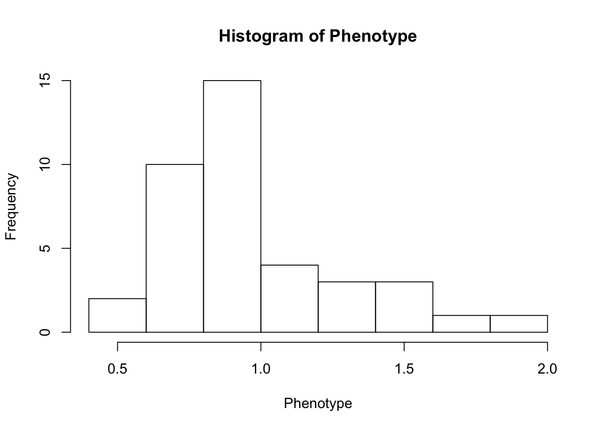
qqnorm(Phenotype)
qqline(Phenotype)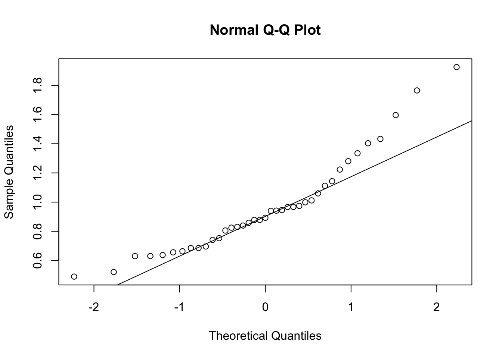
# log(tpm)
Phenotype <- log(as.numeric(CountTable[RowNumber,]))
hist(Phenotype)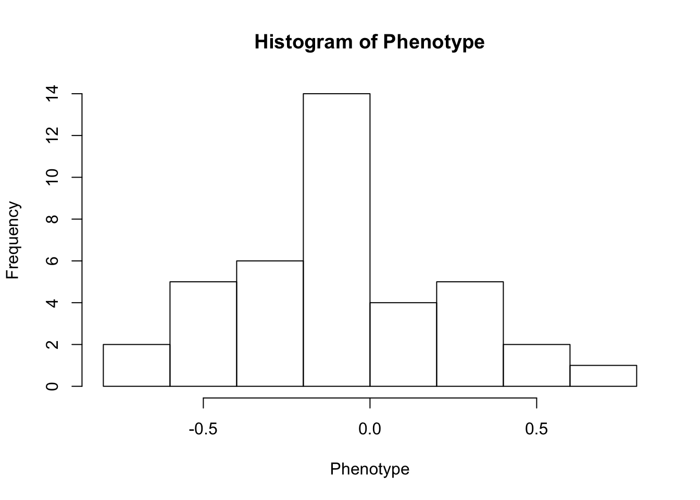
qqnorm(Phenotype)
qqline(Phenotype)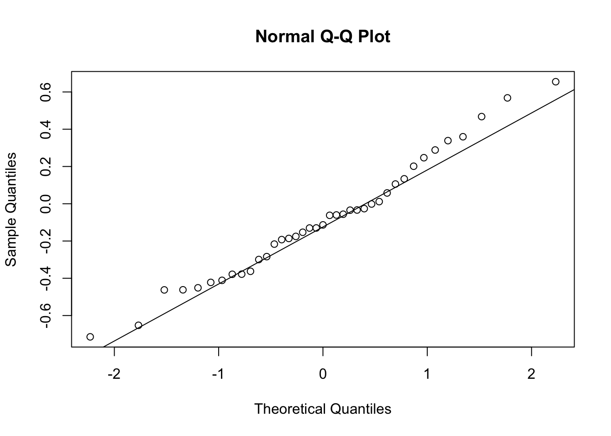
Now I will more systematically test for normality for all genes after a few transformations…
# histogram of P-values of Shapiro test for normality of raw TPM for each gene.
df.shapiro <- CountTable %>%
apply(1, shapiro.test)
Pvals<-unlist(lapply(df.shapiro, function(x) x$p.value))
hist(Pvals)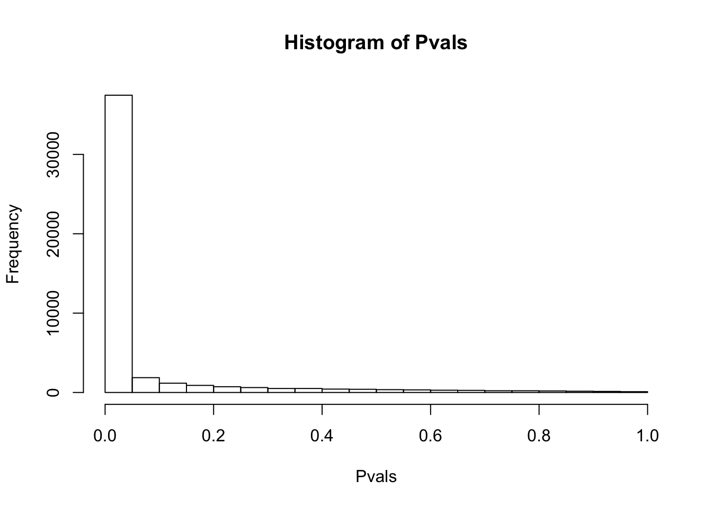
# ...After log-transform+pseudocount.
df.shapiro <- CountTable %>%
+0.1 %>% log() %>%
apply(1, shapiro.test)
Pvals<-unlist(lapply(df.shapiro, function(x) x$p.value))
hist(Pvals)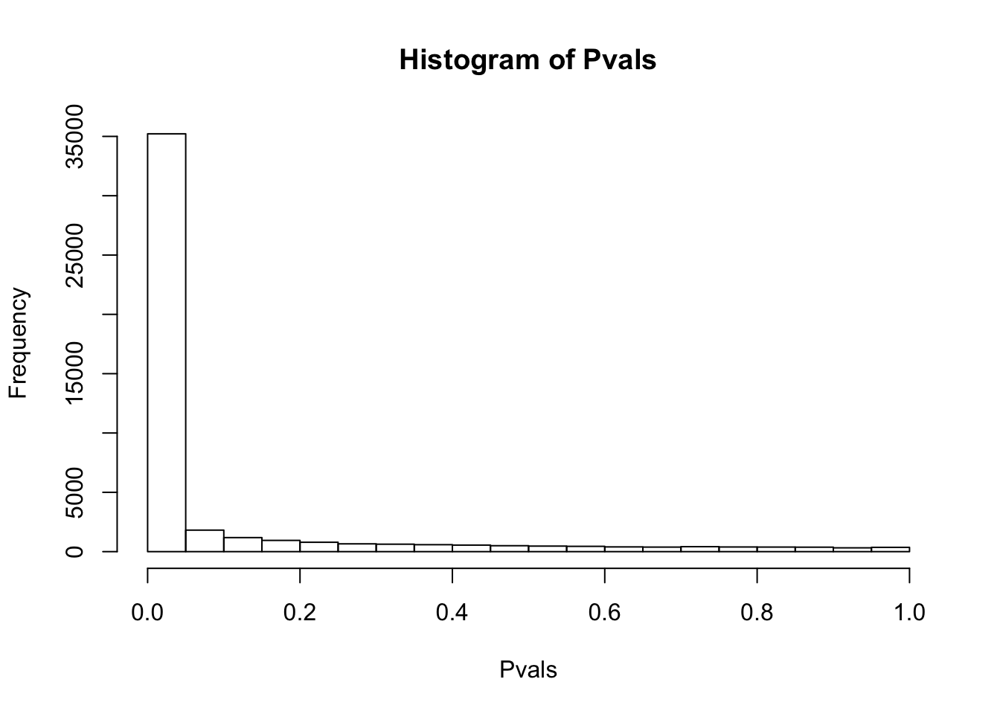
# Maybe the inflation of non-normal expression phenotypes is due to lots of rows with too many (0 + pseudocount) values.
# Retry after filtering all genes with any 0 counts, then log-transform.
df.shapiro <- CountTable %>%
filter_all(all_vars(.>0)) %>% log() %>%
apply(1, shapiro.test)
Pvals<-unlist(lapply(df.shapiro, function(x) x$p.value))
hist(Pvals)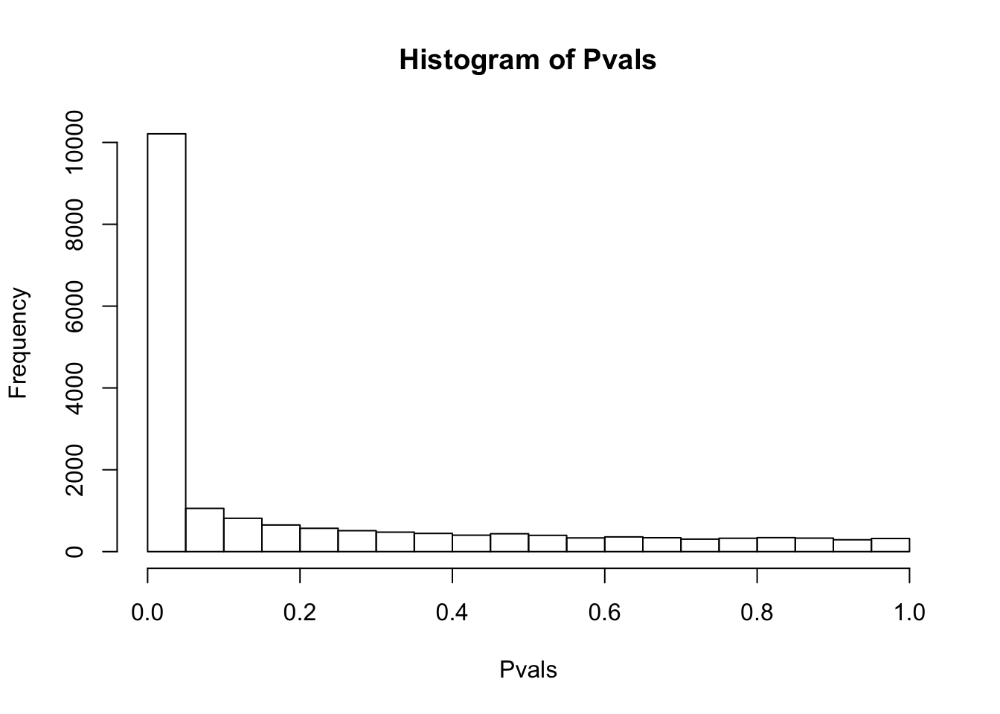
# ...After filtering all genes with any 0 counts, then log-transform, and filter for only top 500 expressed genes
df.shapiro <- CountTable %>%
filter_all(all_vars(.>0)) %>% log() %>%
mutate(sumVar = rowSums(.)) %>%
arrange(desc(sumVar)) %>%
head(500) %>%
select(-sumVar) %>%
apply(1, shapiro.test)
Pvals<-unlist(lapply(df.shapiro, function(x) x$p.value))
hist(Pvals)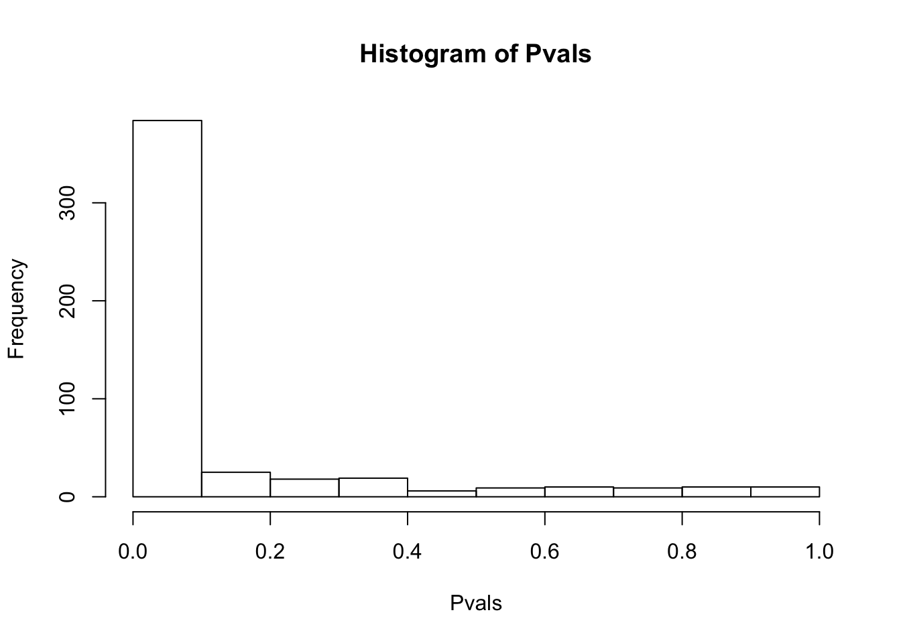 Data is generally not normal, even after considering only highly expressed genes after log-transformation. Probably too much structure/covariates that must be accounted for. For now I will keep exploring the data with log-transformed data, and consider if/how to more carefully transform the data later (eg quantile normalization) .
Plot correlation matrix… For this purpose I will consider log(TPM + 0.1 pseudocount) for top 5000 expressed genes.
CorMatrix <- CountTable %>%
+0.1 %>%
mutate(sumVar = rowSums(.)) %>%
arrange(desc(sumVar)) %>%
head(5000) %>%
select(-sumVar) %>%
log() %>%
scale() %>%
cor(method = c("spearman"))
RNAExtractionDate <- as.character(unclass(factor(plyr::mapvalues(row.names(CorMatrix), from=Metadata$Individual.ID, to=Metadata$RNA.Extract_date))))
RNA.Library.prep.batch <- as.character(unclass(factor(plyr::mapvalues(row.names(CorMatrix), from=Metadata$Individual.ID, to=Metadata$RNA.Library.prep.batch))))
# Heatmap of correlation. Row colors for RNA extraction batch, column colors for RNA library prep batch
heatmap.2(CorMatrix, trace="none", ColSideColors=RNAExtractionDate, RowSideColors = RNA.Library.prep.batch)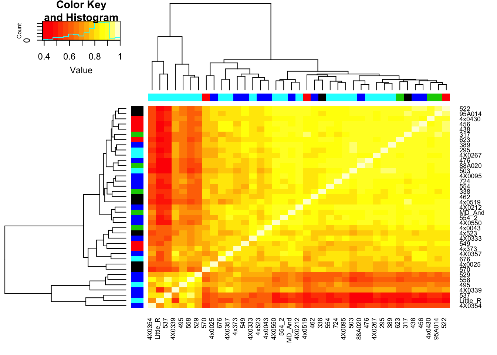
# What is mean correlation
mean(CorMatrix)[1] 0.7765719Now perform PCA, plot a few visualizations…
# pca with log-transformed count table (+ 0.1 pseudocount)
pca_results <- CountTable %>%
+0.1 %>%
mutate(sumVar = rowSums(.)) %>%
arrange(desc(sumVar)) %>%
head(2500) %>%
select(-sumVar) %>%
log() %>%
t() %>%
prcomp(center=T, scale. = T)
summary(pca_results)Importance of components:
PC1 PC2 PC3 PC4 PC5 PC6
Standard deviation 39.2240 14.91153 10.40179 8.84746 8.19430 7.48033
Proportion of Variance 0.6154 0.08894 0.04328 0.03131 0.02686 0.02238
Cumulative Proportion 0.6154 0.70435 0.74763 0.77894 0.80580 0.82818
PC7 PC8 PC9 PC10 PC11 PC12
Standard deviation 6.53488 6.34844 6.20140 5.37654 4.99539 4.78658
Proportion of Variance 0.01708 0.01612 0.01538 0.01156 0.00998 0.00916
Cumulative Proportion 0.84526 0.86138 0.87677 0.88833 0.89831 0.90747
PC13 PC14 PC15 PC16 PC17 PC18
Standard deviation 4.70654 4.46198 4.16461 3.87579 3.72778 3.58367
Proportion of Variance 0.00886 0.00796 0.00694 0.00601 0.00556 0.00514
Cumulative Proportion 0.91634 0.92430 0.93124 0.93725 0.94280 0.94794
PC19 PC20 PC21 PC22 PC23 PC24
Standard deviation 3.44880 3.37702 3.21974 3.0002 2.95093 2.7392
Proportion of Variance 0.00476 0.00456 0.00415 0.0036 0.00348 0.0030
Cumulative Proportion 0.95270 0.95726 0.96141 0.9650 0.96849 0.9715
PC25 PC26 PC27 PC28 PC29 PC30
Standard deviation 2.64912 2.57087 2.51016 2.46120 2.41857 2.38343
Proportion of Variance 0.00281 0.00264 0.00252 0.00242 0.00234 0.00227
Cumulative Proportion 0.97430 0.97694 0.97946 0.98189 0.98423 0.98650
PC31 PC32 PC33 PC34 PC35 PC36
Standard deviation 2.30791 2.20390 2.15539 2.09649 2.07821 1.92604
Proportion of Variance 0.00213 0.00194 0.00186 0.00176 0.00173 0.00148
Cumulative Proportion 0.98863 0.99057 0.99243 0.99419 0.99592 0.99740
PC37 PC38 PC39
Standard deviation 1.83670 1.76876 2.137e-14
Proportion of Variance 0.00135 0.00125 0.000e+00
Cumulative Proportion 0.99875 1.00000 1.000e+00# Merge with metadata
Merged <- merge(pca_results$x, Metadata, by.x = "row.names", by.y = "Individual.ID", all=TRUE)
kable(head(Merged))| Row.names | PC1 | PC2 | PC3 | PC4 | PC5 | PC6 | PC7 | PC8 | PC9 | PC10 | PC11 | PC12 | PC13 | PC14 | PC15 | PC16 | PC17 | PC18 | PC19 | PC20 | PC21 | PC22 | PC23 | PC24 | PC25 | PC26 | PC27 | PC28 | PC29 | PC30 | PC31 | PC32 | PC33 | PC34 | PC35 | PC36 | PC37 | PC38 | PC39 | Source | Individual.Name | Yerkes.ID | Label | Notes | FileID.(Library_Species_CellType_FlowCell) | SX | RNA.Library.prep.batch | RNA.Sequencing.Lane | Sequencing.Barcode | RNA.Extract_date | DNASeq_FastqIdentifier | DNA.library.prep.batch | DNA.Sequencing.Lane | DNA.Sequencin.Barcode | DNA.Extract_date | Age | X__1 | Post.mortem.time.interval | RIN | Viral.status | RNA.total.reads.mapped.to.genome | RNA.total.reads.mapping.to.ortho.exons | Subspecies | DOB | DOD | DOB Estimated | Age (DOD-DOB) | OldLibInfo. RIN,RNA-extractdate,RNAbatch | GenotypePC1 | GenotypePC2 | GenotypePC3 | Admix.NigeriaCameroon | Admix.Central | Admix.Western | Admix.Eastern |
|---|---|---|---|---|---|---|---|---|---|---|---|---|---|---|---|---|---|---|---|---|---|---|---|---|---|---|---|---|---|---|---|---|---|---|---|---|---|---|---|---|---|---|---|---|---|---|---|---|---|---|---|---|---|---|---|---|---|---|---|---|---|---|---|---|---|---|---|---|---|---|---|---|---|---|---|
| 295 | -4.450607 | 15.2199047 | 9.3873162 | 0.5827183 | -7.6224986 | -3.222932 | -5.404917 | 0.3134311 | -0.3214788 | -4.5630865 | -4.828557 | 5.6526248 | 2.3212618 | 2.6673775 | 1.400047 | 0.8472412 | 2.257820 | 0.3027499 | -3.3323074 | -2.8422269 | -0.6284844 | 3.2564655 | 0.8079301 | 1.369027 | 0.3991908 | -0.2891519 | 0.6906651 | 2.8398192 | 2.5887575 | 1.2545386 | -0.7633684 | -0.4762038 | -8.201422 | -3.665902 | 3.1000692 | 1.0102806 | -1.3108538 | -2.7839429 | 0 | Yerkes | Duncan | 295 | 295 | NA | 24_CM_3_L006.bam | M | 5 | 6 | 18 | 2018-10-10 | YG3 | 1 | 1 | NA | 2018-09-01 | 40 | NA | 0.5 | 7.3 | NA | 45.67002 | 17.51562 | verus/ellioti | 24731 | 39386 | NA | 40 | 6.3,6/14/2016,2 | -0.0820238 | 0.0482288 | 0.0152297 | 0.184097 | 1e-05 | 0.815883 | 1e-05 |
| 317 | -20.947886 | -0.1866276 | 1.1315354 | -4.4728882 | -10.3478542 | 2.970197 | -7.365084 | -2.6503314 | -3.5838155 | -0.1699361 | -4.861849 | -2.3330432 | 0.4854135 | 3.0749643 | -0.681427 | 2.5396315 | 2.194052 | -3.0257243 | 1.2224522 | -1.8671535 | 6.8282946 | 0.4340354 | -1.0807536 | 2.630316 | -0.3770471 | 3.5102121 | 0.4763148 | -1.0884944 | 0.8370963 | 0.1601286 | -2.9919575 | -0.9262152 | 3.136494 | 2.017123 | 6.2390268 | -0.6661984 | 5.0210956 | -0.0848085 | 0 | Yerkes | Iyk | 317 | 317 | NA | 11_CM_3_L004.bam | M | 3 | 4 | 4 | 2016-06-07 | YG2 | 1 | 1 | NA | 2018-09-01 | 44 | NA | 2.5 | 7.6 | NA | 42.75617 | 17.18811 | verus | 22859 | 38832 | NA | 43 | NA | -0.1089350 | -0.0190364 | 0.0051265 | 0.000011 | 1e-05 | 0.999969 | 1e-05 |
| 338 | -24.957253 | -5.7497750 | 6.5689672 | -2.5776571 | 14.4819469 | 6.685968 | 5.638185 | -6.3434437 | -11.3481854 | -4.9016847 | 7.260506 | -2.4206509 | -4.9692652 | -1.0649979 | -3.206039 | -2.2657695 | 3.109494 | -3.5521152 | 2.6585544 | -0.1265824 | 2.8437603 | 3.6784819 | -0.5572758 | -1.889896 | 8.1220151 | -0.5054516 | -0.3300081 | 0.2615871 | 2.0154483 | -1.4111280 | 2.0639593 | -1.5369087 | -3.088290 | 3.186013 | 0.5388333 | -0.1243136 | -0.2179688 | 1.0522791 | 0 | Yerkes | Maxine | 338 | 338 | NA | 8_CF_3_L008.bam | F | 3 | 8 | 6 | 2016-06-07 | YG1 | 1 | 1 | NA | 2018-09-01 | 53 | NA | NA | 7.2 | NA | 50.52632 | 19.49295 | verus | 20821 | 40179 | Yes | 53 | NA | -0.1081330 | -0.0180125 | 0.0048198 | 0.000010 | 1e-05 | 0.999970 | 1e-05 |
| 389 | -11.110139 | 8.3594629 | 0.9078538 | -4.4474043 | -2.4928575 | -3.891324 | 1.612010 | -3.0056050 | -1.9132874 | -4.1360696 | 3.967365 | -1.1839740 | 3.9305884 | 4.3514060 | -5.022737 | -1.5912500 | -2.881446 | -2.7652256 | 0.6892992 | -5.1276789 | -3.0001899 | -4.8828397 | -3.8604130 | -2.481347 | -2.1251274 | 1.3485938 | -1.2175912 | 5.3063126 | -1.9839867 | 0.9292217 | 2.8807922 | -2.9988935 | 2.980931 | 1.892661 | 2.8918096 | -1.1710940 | -4.0513626 | -2.2011283 | 0 | Yerkes | Rogger | 389 | 389 | NA | NA | M | 4 | NA | 23 | 2018-10-10 | YG39 | 2 | 2 | NA | 2018-10-01 | 45 | NA | NA | 5.7 | NA | NA | NA | verus | 25204 | 41656 | NA | 45 | NA | -0.1102000 | -0.0206677 | 0.0032202 | 0.000010 | 1e-05 | 0.999970 | 1e-05 |
| 438 | -1.449858 | 15.0424731 | 3.0373196 | -0.8557580 | -5.6983462 | 7.139111 | 10.911910 | 1.7585953 | -5.0411789 | 1.7735770 | 2.584722 | -0.1268017 | -5.0633962 | 0.4041424 | -1.358687 | -3.8590415 | 1.776126 | 5.9685110 | -3.2313058 | 0.9378048 | 2.1280231 | 0.1732151 | -0.6343212 | -4.666408 | 1.3170280 | 0.3337715 | -2.3545929 | -0.4774521 | -1.5078313 | 0.6497610 | -4.4366366 | -2.9485863 | 1.879969 | -6.151146 | -0.1397558 | -4.0756488 | 0.1841345 | 0.2180296 | 0 | Yerkes | Cheeta | 438 | 438 | NA | 155_CF_3_L004.bam | F | 2 | 4 | 8 | 2016-06-22 | YG22 | 1 | 1 | NA | 2018-09-01 | 55 | NA | NA | 5.6 | NA | 55.30614 | 18.06375 | verus | 20821 | 40909 | Yes | 55 | NA | -0.1081380 | -0.0178263 | 0.0044915 | 0.000010 | 1e-05 | 0.999970 | 1e-05 |
| 456 | -12.640425 | 7.7149310 | 2.5241961 | -0.2219808 | -0.1919491 | 7.569948 | 5.715943 | -0.0626909 | 0.5118827 | 6.6526419 | 6.005654 | 4.6666608 | -0.1857602 | -4.4495838 | -1.538733 | 0.5316151 | -0.646229 | 5.5766602 | -7.0312194 | 1.6193611 | -0.0279770 | 2.0434047 | 0.7038654 | -2.587560 | -0.8531699 | -0.1384010 | 0.3979715 | 0.8683074 | -0.1545142 | -1.2727081 | 2.1824296 | 6.3967276 | 1.867300 | 1.121430 | 5.3876835 | 3.5287367 | -0.8599416 | 0.9209316 | 0 | Yerkes | Mai | 456 | 456 | NA | 156_CF_3_L001.bam | F | 2 | 1 | 15 | 2016-06-22 | YG23 | 1 | 1 | NA | 2018-09-01 | 49 | NA | NA | 5.5 | NA | 54.00665 | 20.13760 | verus | 23377 | 41275 | Yes | 49 | NA | -0.1080520 | -0.0178848 | 0.0044265 | 0.000011 | 1e-05 | 0.999969 | 1e-05 |
# Plot a couple PCs with a couple potential covariates
ggplot(Merged, aes(x=PC2, y=PC1, color=factor(RNA.Extract_date), label=Row.names)) +
geom_point() +
geom_text_repel(size=2.5)
| Version | Author | Date |
|---|---|---|
| 8dd795f | Benjmain Fair | 2019-03-20 |
ggplot(Merged, aes(x=PC1, y=PC2, color=factor(RNA.Library.prep.batch), label=Row.names)) +
geom_point() +
geom_text_repel(size=2.5)
| Version | Author | Date |
|---|---|---|
| 8dd795f | Benjmain Fair | 2019-03-20 |
ggplot(Merged, aes(x=PC2, y=PC1, color=RIN, label=Row.names)) +
geom_point() +
geom_text_repel(size=2.5)
| Version | Author | Date |
|---|---|---|
| 8dd795f | Benjmain Fair | 2019-03-20 |
Can already see maybe something with the RNA extraction batch in first PC… Now I am going to look more systematically for significant correlations between potential observed confounders in the Metadata and the first 10 principle components. Will use Pearsons’s correlation to test continuous continuous confounders, will use anova for categorical confounders.
First the continuous confounders
# Grab first 10 PCs
PCs_to_test <- Merged[,2:11]
kable(head(PCs_to_test))| PC1 | PC2 | PC3 | PC4 | PC5 | PC6 | PC7 | PC8 | PC9 | PC10 |
|---|---|---|---|---|---|---|---|---|---|
| -4.450607 | 15.2199047 | 9.3873162 | 0.5827183 | -7.6224986 | -3.222932 | -5.404917 | 0.3134311 | -0.3214788 | -4.5630865 |
| -20.947886 | -0.1866276 | 1.1315354 | -4.4728882 | -10.3478542 | 2.970197 | -7.365084 | -2.6503314 | -3.5838155 | -0.1699361 |
| -24.957253 | -5.7497750 | 6.5689672 | -2.5776571 | 14.4819469 | 6.685968 | 5.638185 | -6.3434437 | -11.3481854 | -4.9016847 |
| -11.110139 | 8.3594629 | 0.9078538 | -4.4474043 | -2.4928575 | -3.891324 | 1.612010 | -3.0056050 | -1.9132874 | -4.1360696 |
| -1.449858 | 15.0424731 | 3.0373196 | -0.8557580 | -5.6983462 | 7.139111 | 10.911910 | 1.7585953 | -5.0411789 | 1.7735770 |
| -12.640425 | 7.7149310 | 2.5241961 | -0.2219808 | -0.1919491 | 7.569948 | 5.715943 | -0.0626909 | 0.5118827 | 6.6526419 |
# Grab potential continuous confounders that make sense to test
Continuous_confounders_to_test <- Merged[, c("RIN", "Age", "GenotypePC1", "GenotypePC2", "GenotypePC3", "Admix.Western", "Admix.Eastern", "Admix.Central", "Admix.NigeriaCameroon")]
kable(head(Continuous_confounders_to_test))| RIN | Age | GenotypePC1 | GenotypePC2 | GenotypePC3 | Admix.Western | Admix.Eastern | Admix.Central | Admix.NigeriaCameroon |
|---|---|---|---|---|---|---|---|---|
| 7.3 | 40 | -0.0820238 | 0.0482288 | 0.0152297 | 0.815883 | 1e-05 | 1e-05 | 0.184097 |
| 7.6 | 44 | -0.1089350 | -0.0190364 | 0.0051265 | 0.999969 | 1e-05 | 1e-05 | 0.000011 |
| 7.2 | 53 | -0.1081330 | -0.0180125 | 0.0048198 | 0.999970 | 1e-05 | 1e-05 | 0.000010 |
| 5.7 | 45 | -0.1102000 | -0.0206677 | 0.0032202 | 0.999970 | 1e-05 | 1e-05 | 0.000010 |
| 5.6 | 55 | -0.1081380 | -0.0178263 | 0.0044915 | 0.999970 | 1e-05 | 1e-05 | 0.000010 |
| 5.5 | 49 | -0.1080520 | -0.0178848 | 0.0044265 | 0.999969 | 1e-05 | 1e-05 | 0.000011 |
# Test
Spearman_test_results <- corr.test(Continuous_confounders_to_test, PCs_to_test, adjust="none", method="spearman")
MinP_floor <- floor(log10(min(Spearman_test_results$p)))
# Plot
Spearman_test_results$p %>%
melt() %>%
dplyr::rename(Pvalue = value, Principle.Component=Var2, Potential.Confounder=Var1) %>%
ggplot(aes(x=Potential.Confounder, y=Principle.Component, fill=Pvalue)) +
geom_tile() +
geom_text(aes(label = signif(Pvalue, 2))) +
scale_fill_gradient(limits=c(10**MinP_floor, 1), breaks=10**seq(MinP_floor,0,1), trans = 'log', high="white", low="red" ) +
theme_classic() +
theme(axis.text.x = element_text(angle = 45, hjust = 1))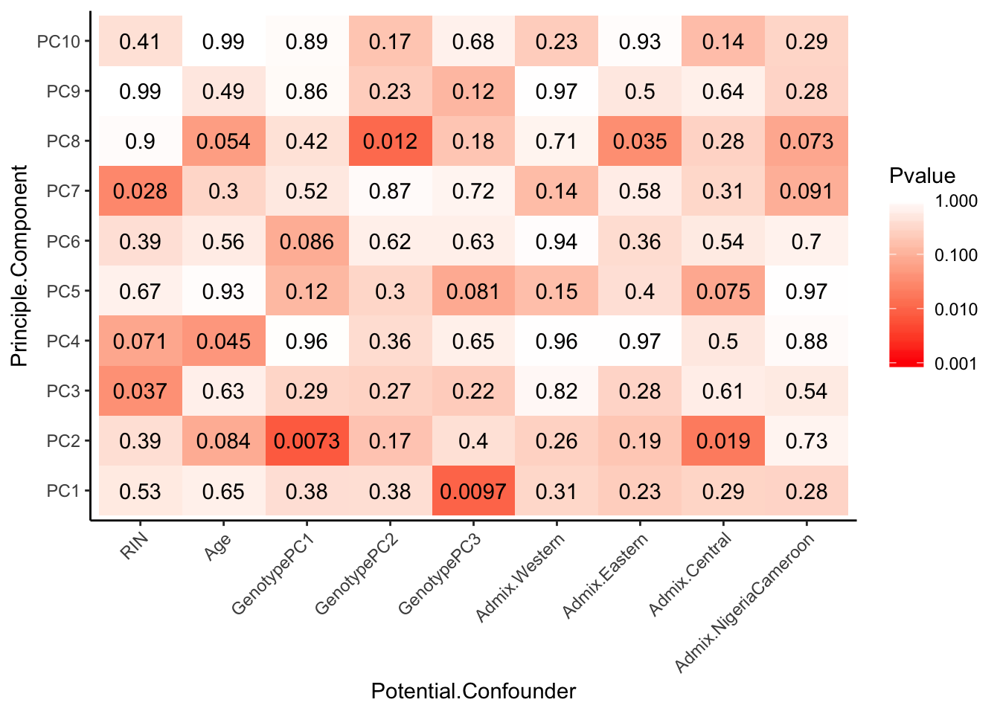
And the categorical confounders…
# Grab potential categorical confounders that make sense to test
Categorical_confounders_to_test <- Merged[,c("Viral.status", "SX","RNA.Extract_date", "RNA.Library.prep.batch", "Source")]
kable(head(Categorical_confounders_to_test))| Viral.status | SX | RNA.Extract_date | RNA.Library.prep.batch | Source |
|---|---|---|---|---|
| NA | M | 2018-10-10 | 5 | Yerkes |
| NA | M | 2016-06-07 | 3 | Yerkes |
| NA | F | 2016-06-07 | 3 | Yerkes |
| NA | M | 2018-10-10 | 4 | Yerkes |
| NA | F | 2016-06-22 | 2 | Yerkes |
| NA | F | 2016-06-22 | 2 | Yerkes |
# Viral status will need to be reformatted to make factors that make sense for testing (example: HBV+, HBV- HCV+, HCV- are factors that make sense). Let's assume that NA means negative status.
Categorical_confounders_to_test$HBV_status <- grepl("HBV+", Categorical_confounders_to_test$Viral.status)
Categorical_confounders_to_test$HCV_status <- grepl("HCV+", Categorical_confounders_to_test$Viral.status)
Categorical_confounders_to_test <- Categorical_confounders_to_test[, -1 ]
kable(head(Categorical_confounders_to_test))| SX | RNA.Extract_date | RNA.Library.prep.batch | Source | HBV_status | HCV_status |
|---|---|---|---|---|---|
| M | 2018-10-10 | 5 | Yerkes | FALSE | FALSE |
| M | 2016-06-07 | 3 | Yerkes | FALSE | FALSE |
| F | 2016-06-07 | 3 | Yerkes | FALSE | FALSE |
| M | 2018-10-10 | 4 | Yerkes | FALSE | FALSE |
| F | 2016-06-22 | 2 | Yerkes | FALSE | FALSE |
| F | 2016-06-22 | 2 | Yerkes | FALSE | FALSE |
# Do one-way anova test as a loop.
# First initialize results matrix
Pvalues <- matrix(ncol = dim(PCs_to_test)[2], nrow = dim(Categorical_confounders_to_test)[2])
colnames(Pvalues) <- colnames(PCs_to_test)
rownames(Pvalues) <- colnames(Categorical_confounders_to_test)
for (confounder in seq_along(Categorical_confounders_to_test)) {
for (PC in seq_along(PCs_to_test)) {
res.aov <- aov(PCs_to_test[[PC]] ~ Categorical_confounders_to_test[[confounder]])
pval <- summary(res.aov)[[1]][["Pr(>F)"]][1]
Pvalues[confounder, PC] <- pval
}
}
# Plot
MinP_floor <- floor(log10(min(Pvalues)))
Pvalues %>%
melt() %>%
dplyr::rename(Pvalue = value, Principle.Component=Var2, Potential.Confounder=Var1) %>%
ggplot(aes(x=Potential.Confounder, y=Principle.Component, fill=Pvalue)) +
geom_tile() +
geom_text(aes(label = signif(Pvalue, 2))) +
scale_fill_gradient(limits=c(10**MinP_floor, 1), breaks=10**seq(MinP_floor,0,1), trans = 'log', high="white", low="red" ) +
theme_classic() +
theme(axis.text.x = element_text(angle = 45, hjust = 1))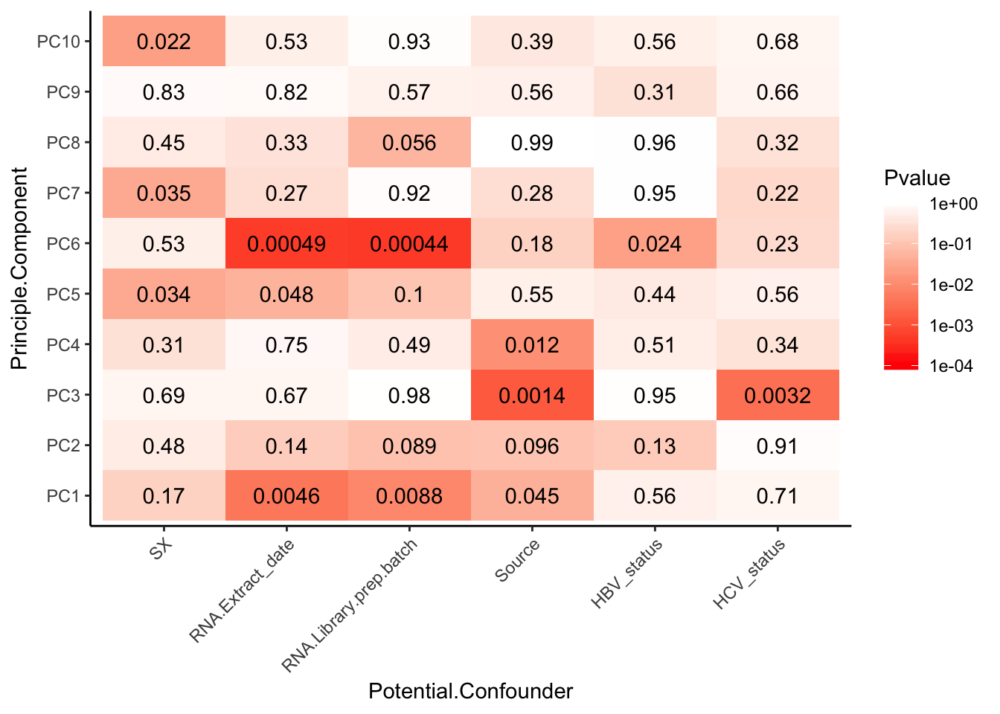
Plot some of the significant PC-metadata associations for a better look…
ggplot(Merged, aes(x=factor(RNA.Extract_date), y=PC6, label=Label)) +
geom_boxplot() +
geom_jitter(position=position_jitter(width=.2, height=0))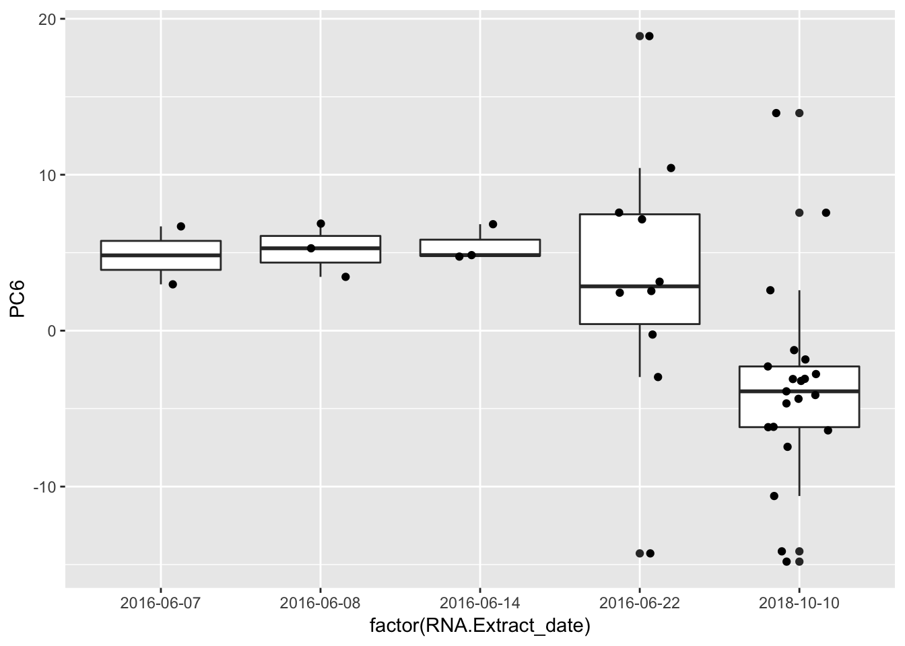
ggplot(Merged, aes(x=factor(RNA.Library.prep.batch), y=PC6)) +
geom_boxplot() +
geom_jitter(position=position_jitter(width=.1, height=0))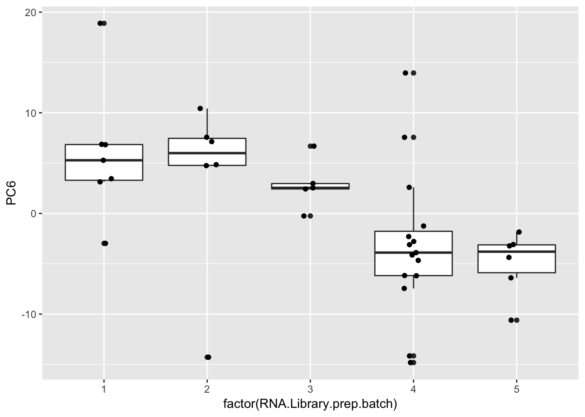
ggplot(Merged, aes(factor(RNA.Extract_date))) +
geom_bar(aes(fill = factor(RNA.Library.prep.batch)))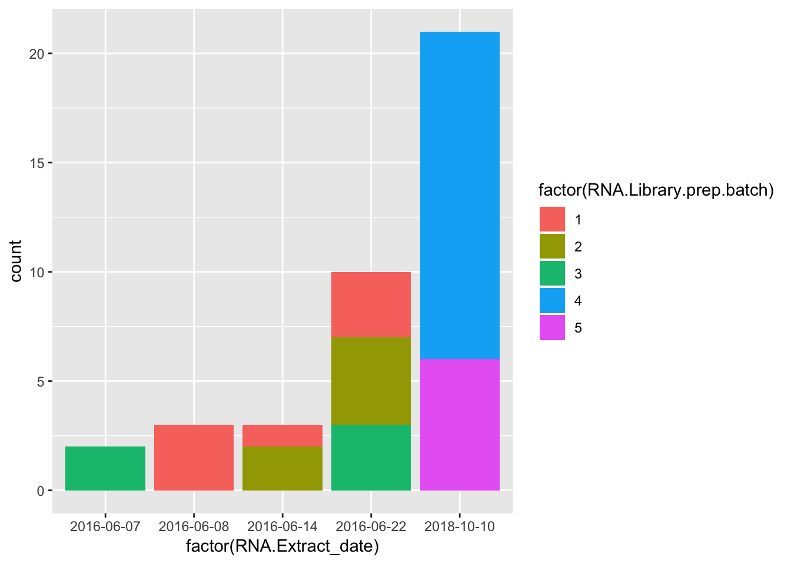 Strongest effect seems to be related to batch… RNA library prep batch and RNA extraction batch (date) both covary with a top PC. Have to check with Claudia that the last batch was a different extraction method (Trizol vs RNEasy).
ggplot(Merged, aes(x=factor(Source), y=PC3)) +
geom_boxplot() +
geom_jitter(position=position_jitter(width=.1, height=0))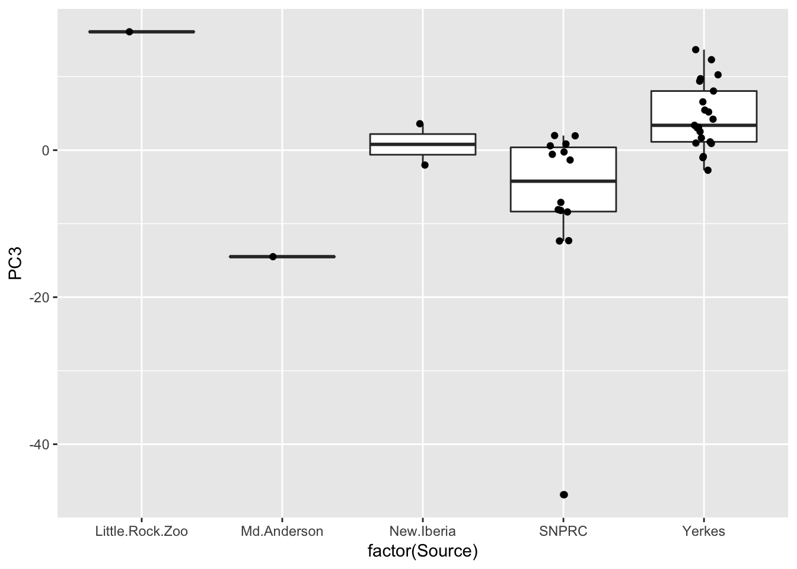
ggplot(Merged, aes(x=RIN, y=PC3, label=Label, color=factor(Source))) +
geom_point() +
geom_text_repel(size=2.5)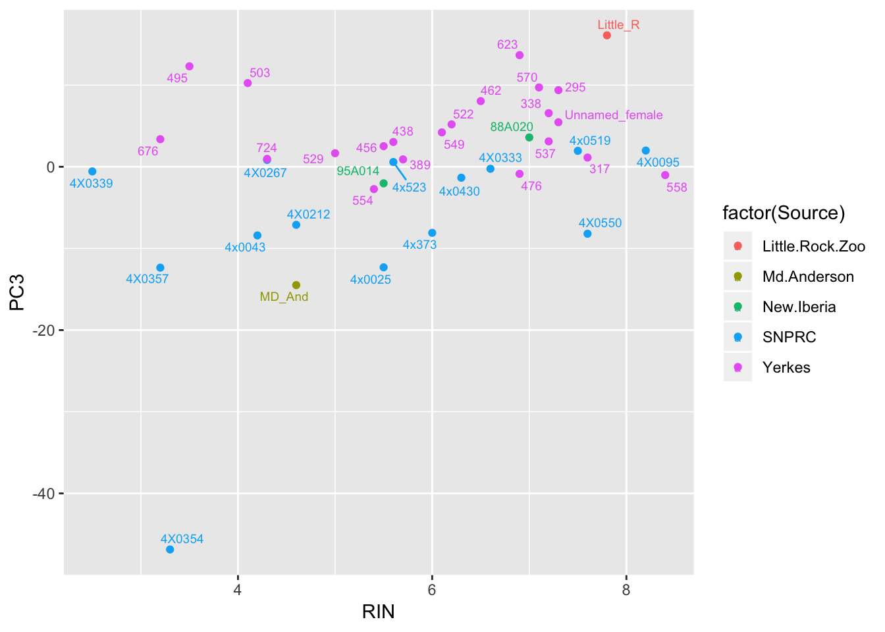 Also, Source covaries with PC3, though we don’t have many observations for a lot of Source categories so it may not make be a good idea to directly model source.
sessionInfo()R version 3.5.1 (2018-07-02)
Platform: x86_64-apple-darwin15.6.0 (64-bit)
Running under: macOS 10.14
Matrix products: default
BLAS: /Library/Frameworks/R.framework/Versions/3.5/Resources/lib/libRblas.0.dylib
LAPACK: /Library/Frameworks/R.framework/Versions/3.5/Resources/lib/libRlapack.dylib
locale:
[1] en_US.UTF-8/en_US.UTF-8/en_US.UTF-8/C/en_US.UTF-8/en_US.UTF-8
attached base packages:
[1] stats graphics grDevices utils datasets methods base
other attached packages:
[1] gplots_3.0.1 reshape2_1.4.3 knitr_1.22 ggrepel_0.8.0
[5] psych_1.8.10 forcats_0.4.0 stringr_1.4.0 dplyr_0.8.0.1
[9] purrr_0.3.2 readr_1.3.1 tidyr_0.8.2 tibble_2.1.1
[13] tidyverse_1.2.1 readxl_1.1.0 ggfortify_0.4.5 ggplot2_3.1.0
[17] corrplot_0.84
loaded via a namespace (and not attached):
[1] Rcpp_1.0.1 lubridate_1.7.4 lattice_0.20-38
[4] gtools_3.8.1 assertthat_0.2.1 rprojroot_1.3-2
[7] digest_0.6.18 R6_2.4.0 cellranger_1.1.0
[10] plyr_1.8.4 backports_1.1.3 evaluate_0.13
[13] highr_0.8 httr_1.4.0 pillar_1.3.1
[16] rlang_0.3.3 lazyeval_0.2.2 rstudioapi_0.10
[19] gdata_2.18.0 whisker_0.3-2 rmarkdown_1.11
[22] labeling_0.3 foreign_0.8-71 munsell_0.5.0
[25] broom_0.5.1 compiler_3.5.1 modelr_0.1.4
[28] xfun_0.6 pkgconfig_2.0.2 mnormt_1.5-5
[31] htmltools_0.3.6 tidyselect_0.2.5 gridExtra_2.3
[34] workflowr_1.2.0 crayon_1.3.4 withr_2.1.2
[37] bitops_1.0-6 grid_3.5.1 nlme_3.1-137
[40] jsonlite_1.6 gtable_0.3.0 git2r_0.24.0
[43] magrittr_1.5 scales_1.0.0 KernSmooth_2.23-15
[46] cli_1.1.0 stringi_1.4.3 fs_1.2.6
[49] xml2_1.2.0 generics_0.0.2 tools_3.5.1
[52] glue_1.3.1 hms_0.4.2 parallel_3.5.1
[55] yaml_2.2.0 colorspace_1.4-1 caTools_1.17.1.1
[58] rvest_0.3.2 haven_2.1.0